迎“八一”送温暖 漯河金康护理院、万安康复医院和社会公益团体共同慰问抗战老兵
人气: "" 时间：2018-07-28
为感恩老兵们为我们后辈人开创出的和平稳定的幸福家园，弘扬他们大无畏无私奉献精神，在“八一”建军节即将来临之际，河南金康万安集团下属的漯河金康护理院和万安康复医院专家团队与爱心公益团体，共同到召陵区青年镇抗战老兵家进行慰问和免费体检义诊。
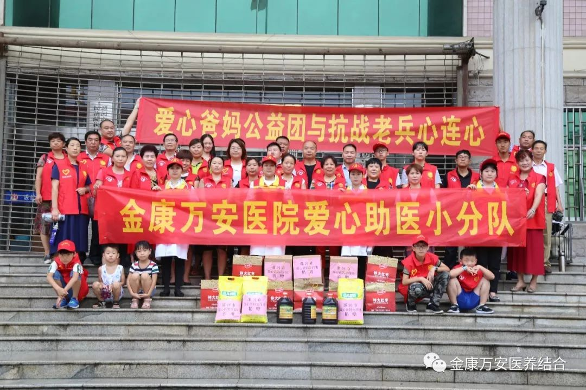
集合完毕准备出发
7月28日上午，伴着一阵清凉小雨我院义诊专家团队和爱心公益团体第一站来到了抗战老兵方九河老人的家中。方九河老人今年73岁，曾参加过珍宝岛战役和抗美援越战役，为保卫国土、维护世界和平做出无私奉献。我院专家团队和社会公益团体再为老人送去健康体检和慰问物资的同时深深的向老人表达了崇高的敬意！
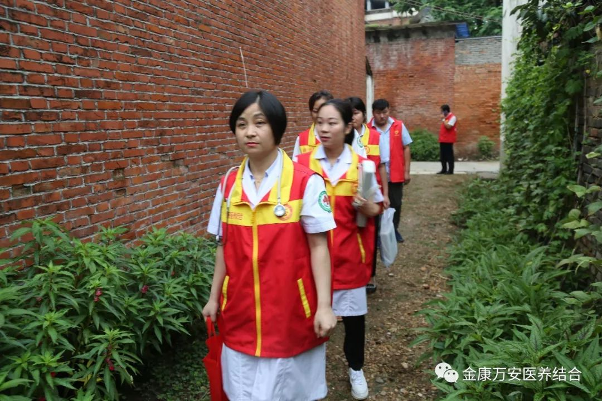
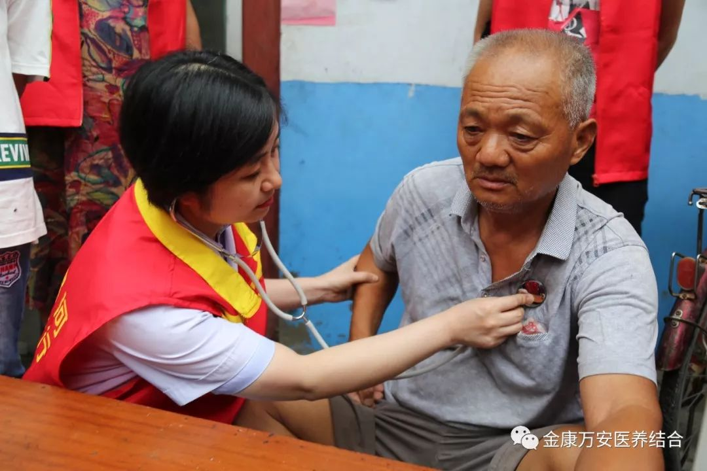
万素华院长为方九河老人听诊
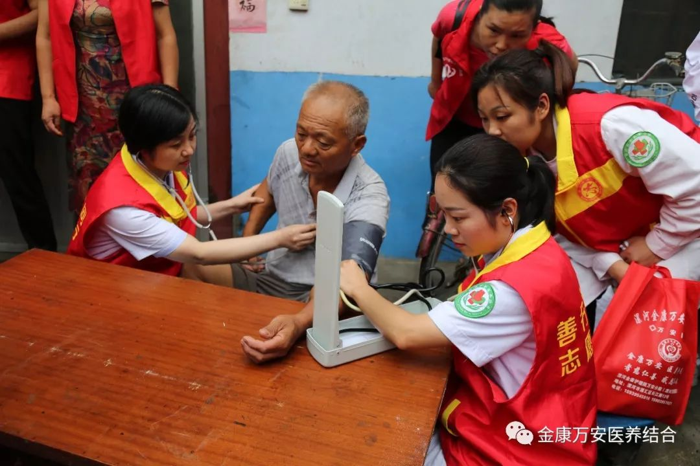
为老人量血压
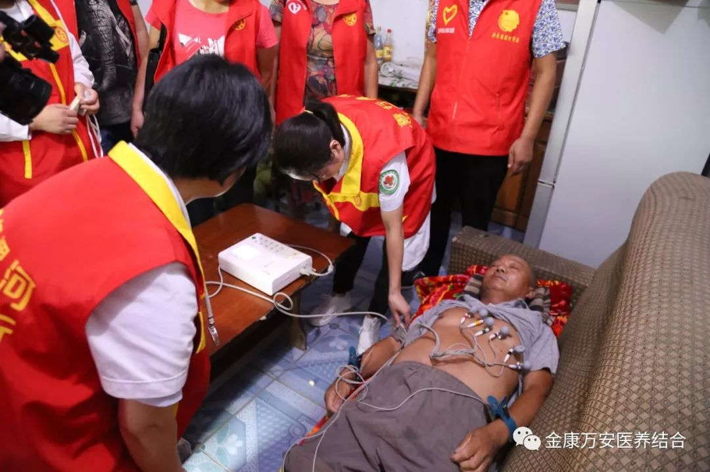
为老人做心电图
第二站我们来到抗美援老老兵张保国老人家中。张保国老人今年70岁，曾参加过抗美援老等战役，双耳在战役中遭到敌军炮弹震聋。
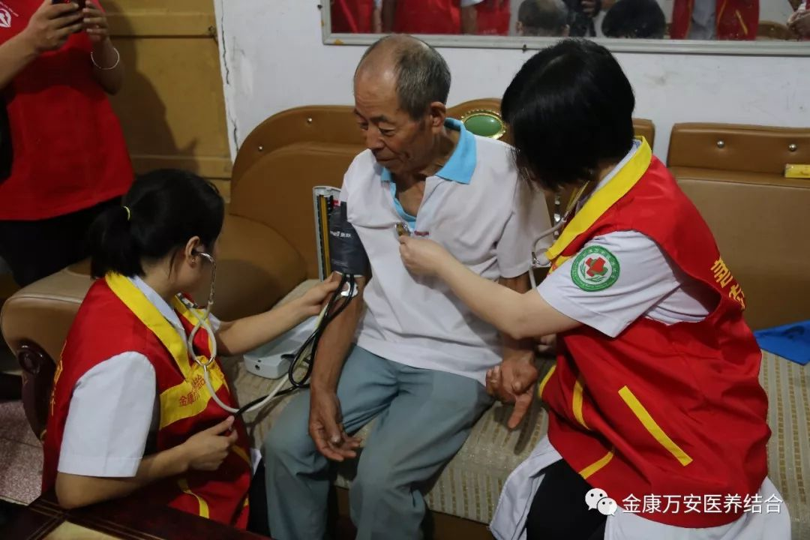
为老人听诊
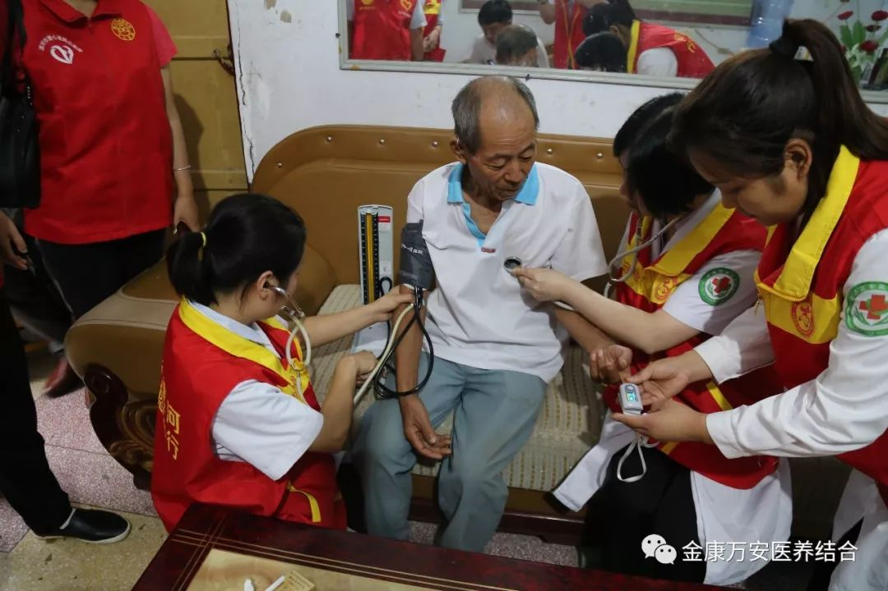
为老人测血氧
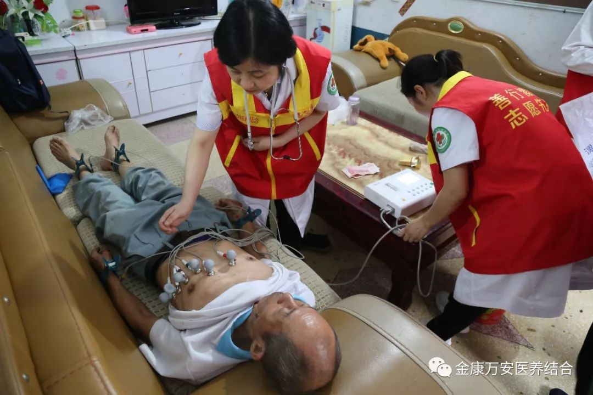
为老人做心电图
最后一站我们来到抗日老兵庞凤岗家中。庞凤岗老人高龄90，由于年轻时参加过多次抗日战争，现在90岁高龄身体状态依旧精神饱满。老人看到义诊团队和公益团体人员后十分激动，一直感谢党、感谢国家和社会人员的照顾。老人这种无私奉献，为他人着想的精神值得我们歌颂！
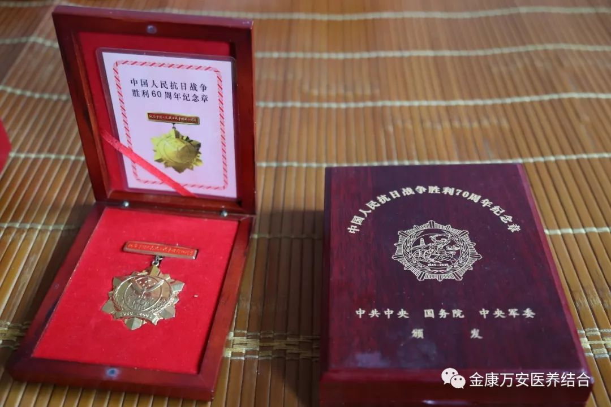
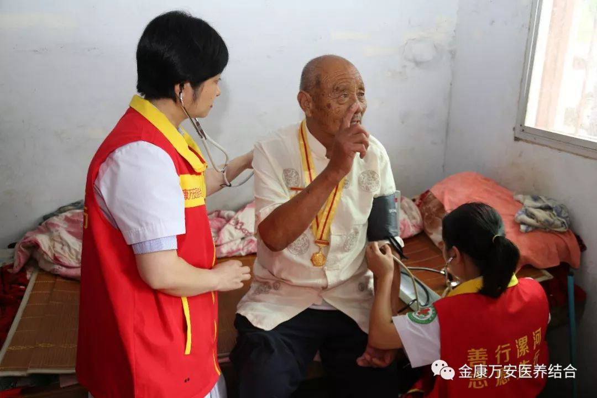
为老人听诊、测血压
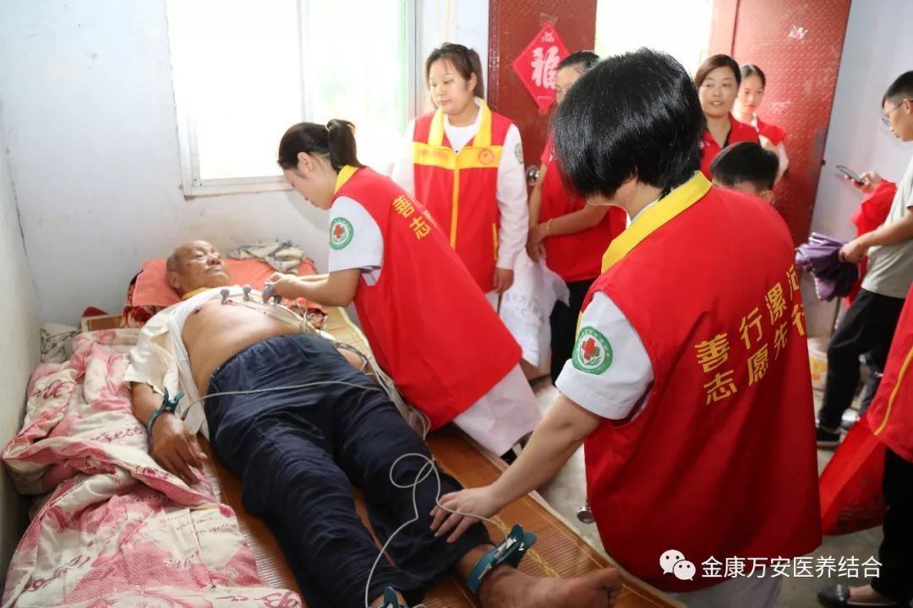
为老人做心电图
义诊结束后参与此次慰问的人员表示：老一辈革命军人为祖国解放在战争年代出生入死，为党和人民立下汗马功劳，是我们尊敬学习的榜样。我们今后将一如既往的关注老兵们的身体健康情况，为老兵们送健康、送温暖！
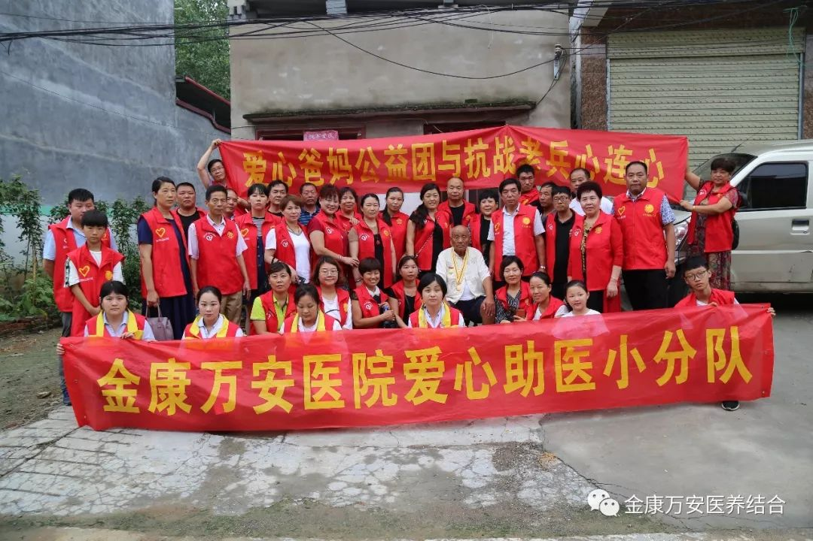